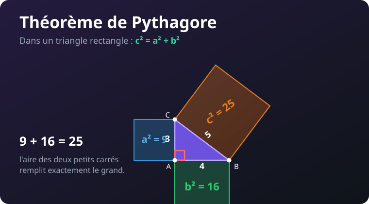

Le théorème de Pythagore, en images animées
Une relation magique entre les trois côtés d'un triangle rectangle. Chaque idée est expliquée pas à pas avec une animation que tu peux regarder, puis modifier toi-même.

Ctrl + Entrée) pour voir le résultat. ↺ remet le code d'origine.
Pas besoin de tout comprendre dans le code : l'important est de jouer avec les nombres et de regarder ce qui change. À la fin, teste-toi avec le QCM !
1 Bienvenue
Il y a plus de 2500 ans, un mathématicien grec nommé Pythagore a mis en lumière une vérité étonnante : dans un triangle qui a un angle droit, les trois côtés sont liés par une relation très simple. Cette relation sert encore aujourd'hui aux architectes, aux marins, aux jeux vidéo… et bientôt à toi !
2 Le triangle rectangle
Un triangle est dit rectangle quand l'un de ses angles est un angle droit (90°), comme le coin d'une feuille de papier. On le repère par un petit carré rouge. Pythagore ne parle que de ces triangles-là.
Change hauteur = 110 en hauteur = 200. Le triangle s'allonge mais l'angle en A reste-t-il droit ? (Oui : le côté vertical et le côté horizontal forment toujours 90°.)
3 Hypoténuse & côtés de l'angle droit
Dans un triangle rectangle, les côtés portent des noms :
- Les deux côtés qui forment l'angle droit s'appellent les côtés de l'angle droit (on dit aussi les « cathètes »).
- Le plus grand côté, celui qui est en face de l'angle droit, s'appelle l'hypoténuse. C'est toujours le plus long !
4 L'énoncé du théorème
Voici la phrase à connaître par cœur :
Si l'angle droit est en A, et qu'on note l'hypoténuse BC, alors :
BC² = AB² + AC²
« Mettre au carré » un nombre, c'est le multiplier par lui-même : 5² = 5 × 5 = 25. L'animation montre les trois carrés construits sur les côtés.
Remplace a = 3, b = 4 par a = 6, b = 8. Quelle est l'hypoténuse ? (Indice : 36 + 64 = 100, et 10² = 100 !)
5 La preuve par les carrés
Pourquoi a² + b² donne-t-il vraiment c² ? On dessine un vrai carré sur chaque côté. L'aire du carré bleu plus l'aire du carré vert remplit exactement le carré orange posé sur l'hypoténuse. Compte les petits carreaux : 9 + 16 = 25.
6 La preuve-puzzle (animée)
Voici une démonstration visuelle. Un grand carré contient quatre triangles rectangles identiques. En les déplaçant, la place vide passe d'un seul grand carré (l'hypoténuse au carré) à deux carrés plus petits (les deux côtés au carré). Même surface vide → même aire !
7 Calculer l'hypoténuse
Quand on connaît les deux côtés de l'angle droit, on trouve l'hypoténuse en 3 étapes :
On calcule a² et b², puis on les additionne.
L'hypoténuse au carré est connue. Pour avoir l'hypoténuse, on prend la racine carrée (le bouton √ de la calculatrice) : c'est l'opération inverse du carré.
✦ Change a et b : le calcul se refait tout seul.
Une échelle s'appuie contre un mur. Le pied est à a = 5 m du mur, elle monte à b = 12 m. Quelle est la longueur de l'échelle (l'hypoténuse) ? Mets a = 5, b = 12 et lis le résultat. (Réponse : 13 m.)
8 Calculer un côté de l'angle droit
Et si on connaît l'hypoténuse et un seul des côtés de l'angle droit ? On utilise une soustraction au lieu d'une addition : a² = c² − b², puis racine carrée.
c² − b²). Pour trouver l'hypoténuse, on additionne (a² + b²). L'hypoténuse est toujours le plus grand : si tu obtiens un côté plus grand qu'elle, c'est une erreur.Mets c = 10, b = 6. Combien vaut l'autre côté ? (Réponse : 8, car 100 − 36 = 64 et √64 = 8.)
9 La réciproque : ce triangle est-il rectangle ?
Le théorème marche aussi à l'envers ! Si on connaît les trois côtés, on peut vérifier si le triangle a un angle droit :
- On prend le plus grand côté (candidat hypoténuse) et on calcule son carré.
- On additionne les carrés des deux autres.
- Si les deux résultats sont égaux → le triangle est rectangle. Sinon, il ne l'est pas.
Ajoute le triangle [9,12,15] dans la liste triangles. Est-il rectangle ? Devine avant d'exécuter ! (Indice : 81 + 144 = 225 = 15².)
10 Les triplets pythagoriciens
Certains triangles rectangles ont des côtés qui sont tous des nombres entiers. Ces trios sont appelés des triplets pythagoriciens. Le plus célèbre est (3, 4, 5). En les multipliant tous par un même nombre, on en fabrique d'autres : (6, 8, 10), (9, 12, 15)…
Quelques triplets à connaître : (3,4,5) · (5,12,13) · (8,15,17) · (7,24,25).
11 Application : la distance entre deux points
Pythagore sert à mesurer la distance « à vol d'oiseau » entre deux points. On forme un triangle rectangle : un déplacement horizontal, un déplacement vertical, et l'hypoténuse est la distance directe. C'est exactement ce que calculent les jeux vidéo et le GPS !
Déplace le point Q : mets Q = [280, 60]. Le déplacement horizontal augmente, donc la distance aussi. Essaie de placer Q pour obtenir une distance « ronde ».
📋 Mémo — les formules de Pythagore
Tout le cours tient dans ce tableau. L'angle droit est en A, l'hypoténuse est BC.
| Situation | Formule à utiliser |
|---|---|
| Énoncé du théorème | BC² = AB² + AC² |
| Calculer l'hypoténuse | BC = √(AB² + AC²) |
| Calculer un côté de l'angle droit | AB = √(BC² − AC²) |
| Vérifier (réciproque) | rectangle si grand² = petit² + moyen² |
| Mettre au carré | n² = n × n |
| Racine carrée (inverse du carré) | √(n²) = n |